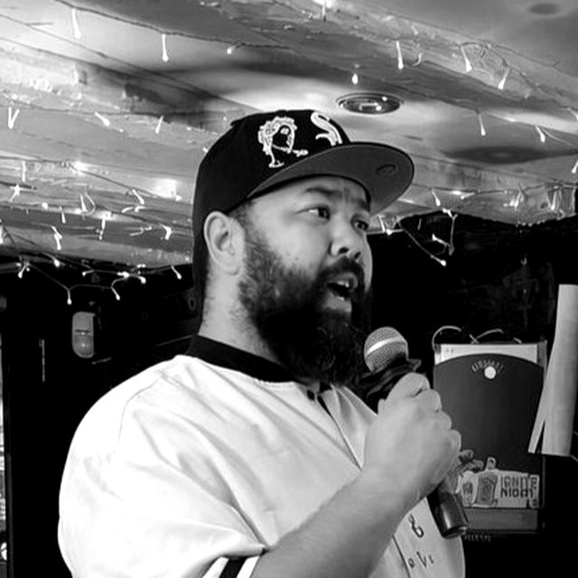

← The duo
Vocals
KyleWilson
Eighteen years of live singing, from Abbey Road Studios to Alexandra Palace.
At a glance
- Role
- Vocals
- Singing live for
- Eighteen years
- Genres
- Swing · Soul · Motown · Pop · R&B · Musical theatre
- Credits
- Alexandra Palace · Abbey Road Studios · Liverpool festivals
- Based in
- Luton, Bedfordshire
- Travels to
- Bedfordshire, Hertfordshire, Buckinghamshire and further by arrangement
The story
Kyle, in full
Kyle has been singing live for eighteen years, with credits that include Alexandra Palace, Abbey Road Studios and festivals in Liverpool. He sings tenor with soul and R&B at the heart of it, and writes songs of his own alongside the swing, Motown and pop classics.
[A favourite night on stage, and what he loves about singing at weddings and parties.]
[What Kyle brings to the duo, and why he and Will work so well together.]
The songs you choose are more than lyrics. They’re stories you share with the people you love.
On the bill
Credits
- Alexandra Palace
- Abbey Road Studios
- Festivals in Liverpool
- Own original music, including “Own Me”
- An Evening to Remember, charity showcase in aid of X-4rce CIC (December 2026)
On the playlist
Songs I love
- All of Me · John Legend
- Make You Feel My Love · Adele
- Let’s Stay Together · Al Green
- Stand By Me · Ben E. King
- That’s Life · Frank Sinatra
Backstage
Getting to know Kyle
- First song we sang together
- [Kyle's answer]
- The song that always gets the room
- [Kyle's answer]
- Best moment on a dance floor
- [Kyle's answer]
- Favourite thing about singing as a duo
- [Kyle's answer]
- What we do before we go on
- [Kyle's answer]
Next
Hear us together
Tell us about your day and we will come back with availability and a quote.